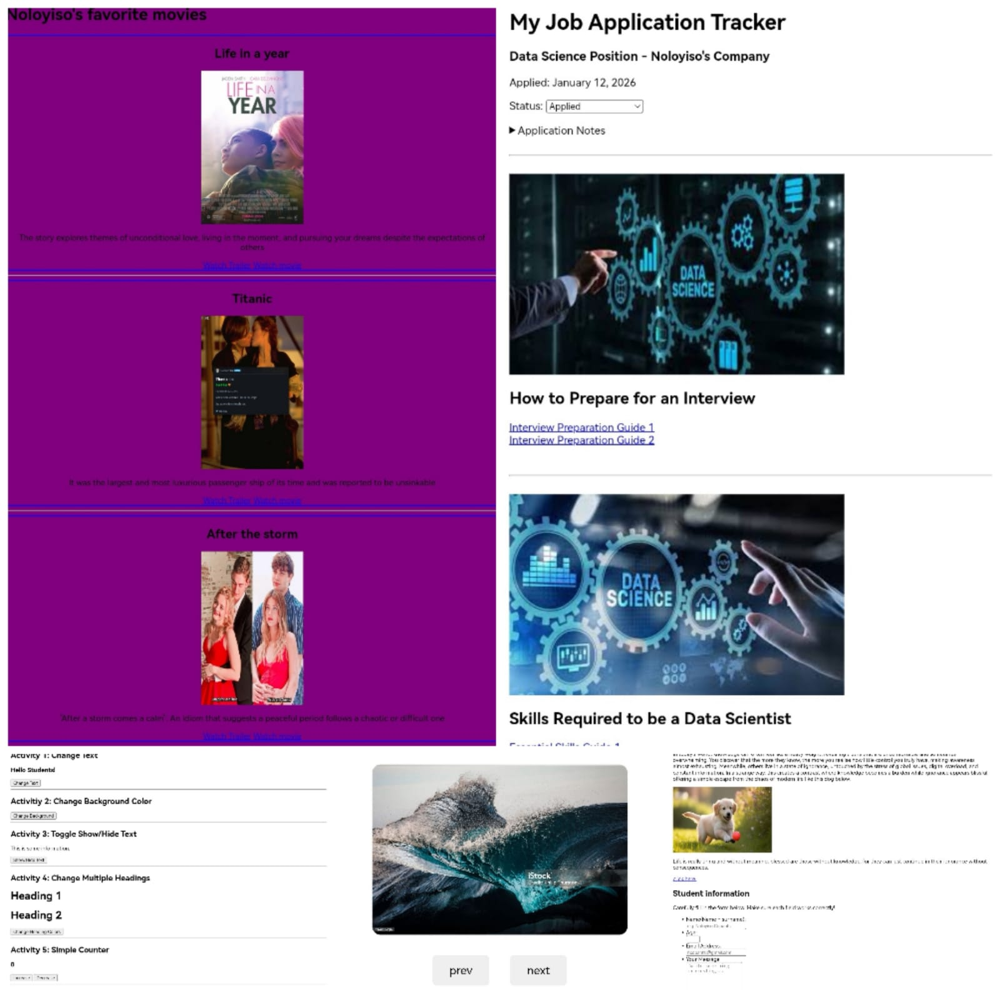
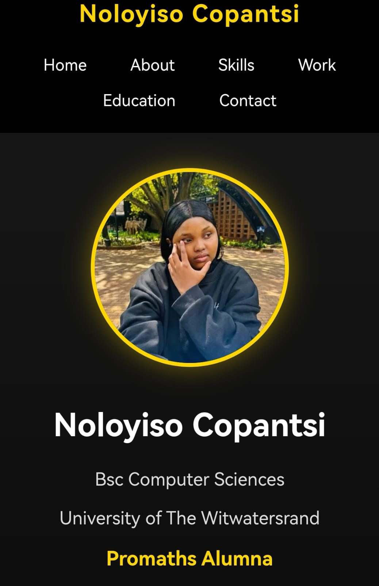

Bsc Computer Sciences
University of The Witwatersrand
Promaths Alumna
Hello! I'm Noloyiso Copantsi, a Computer Science student at the University of the Witwatersrand. I'm passionate about technology and solving problems through code.
I'm currently learning web development through the WITS PROMATHS Codecamp. I'm building websites using HTML, CSS, and JavaScript.
I want to become a Data Scientist who creates useful projects to companies and comes with solutions to challenges a company may face. I'm working hard to learn programming and improve my skills every day.
I'm proud to be a Promaths Alumnus, having completed the intensive web development program where I gained hands-on experience in building modern websites and applications.
I enjoy learning about Machine learning, problem-solving, and working on projects that help companies and businesses. In my free time, I like to read about new problems a company may face in the future and practice coding.
Participated in web development bootcamp learning HTML, CSS, and JavaScript.
Completed multiple projects and assignments.
 View My work Git hub repo View My Work Git hub repo View My Work Git hub repo View My Work> Git hub repo View My Work Git hub repoThis is my personal portfolio website that I built for my WITS PROMATHS assignment.
Technologies: HTML, CSS, JavaScript
 View My Work> Git hub repoDegree: Bachelor of Science in Computer Science
Currently studying programming, algorithms, and web development. Learning to build websites and solve complex problems.
Program: Web Development Intensive Training
Duration: December 2025
Learned HTML, CSS, JavaScript, and how to build websites. Gained practical experience in web development and project building.
Personal: ncopantsi@gmail.com
Academic: 2995258@students.wits.ac.za
063 767 2806
Johannesburg, South Africa